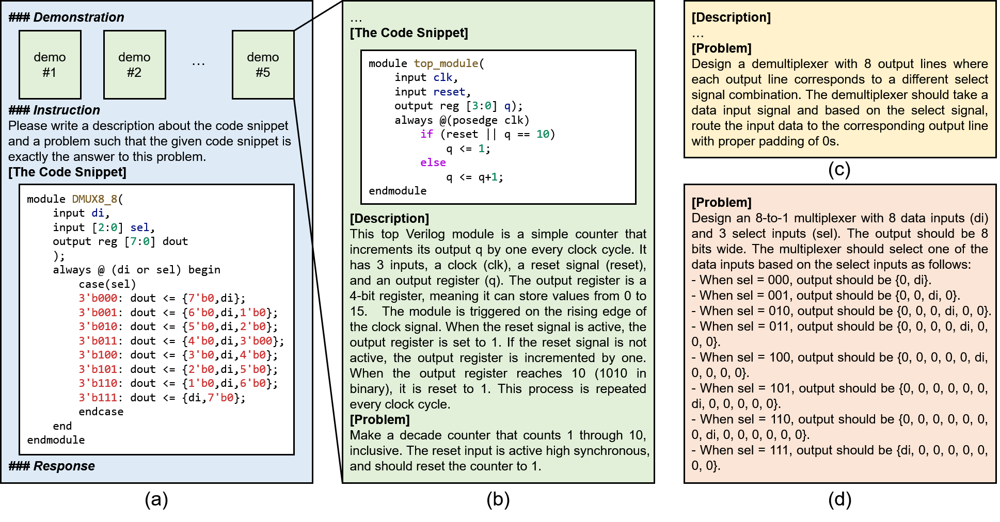

Multi-level Code Summarization
Manual annotation is prohibitively time-consuming and costly. Hence, we employed GPT-3.5 to generate high-level summaries for each Verilog module as its requirement description. As analyzed in VerilogEval, when required for summarising, LLMs often produce verbose descriptions, preferring line-by-line explanations over high-level summaries. To address this issue, we introduce a multi-level summarization method, employing few-shot learning to guide GPT-3.5 in first producing detailed descriptions and then abstracting high-level summaries.
An actual example of the prompt for multi-level summarization. (a) The prompt provided to GPT-3.5. (b) An example of the demonstrations, with code, low-level descriptions, and high-level summaries. (c) Summaries responded from GPT-3.5 with and (d) without multi-level summarization.
